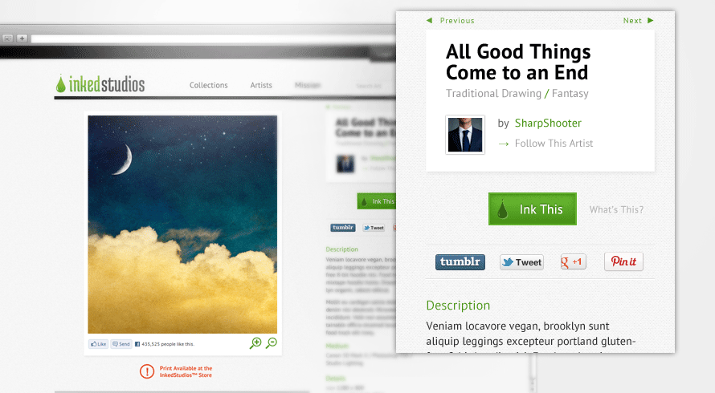
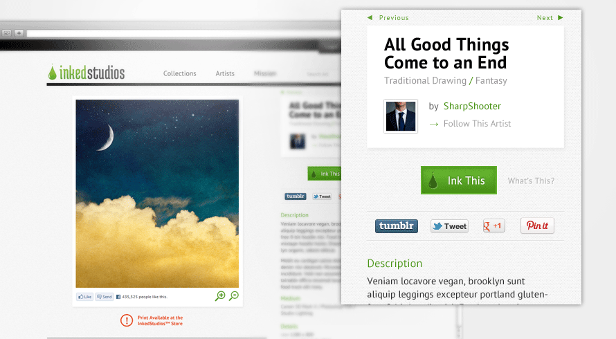

Showcase 1 of 5


o3 Bistro & Lounge
brand identity / print designThis asian fusion bistro next to the San Francisco City Hall wanted to leverage it's prime location towards politicians & symphony goers without putting off young professionals. Working off the interior designer's decor plans, typeface and colors were chosen to compliment the inside, as were the creations of the menus and logo.


 
